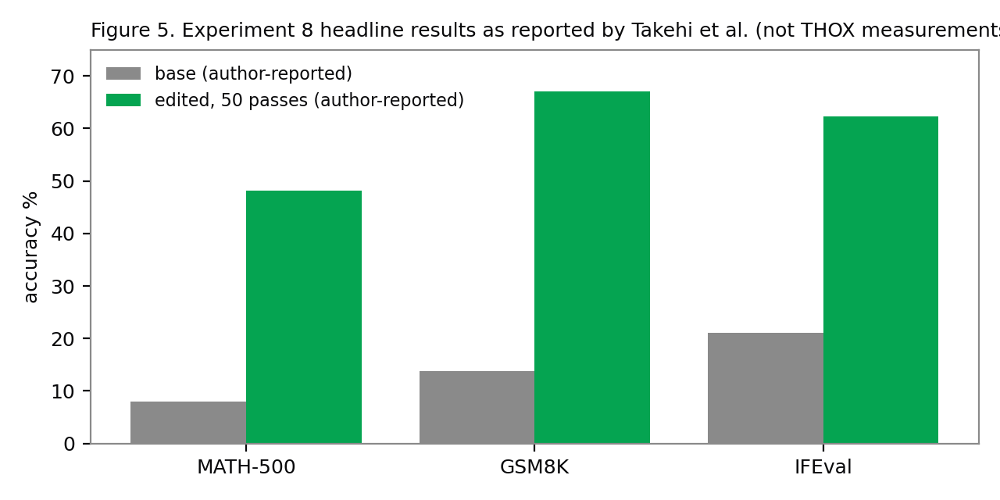
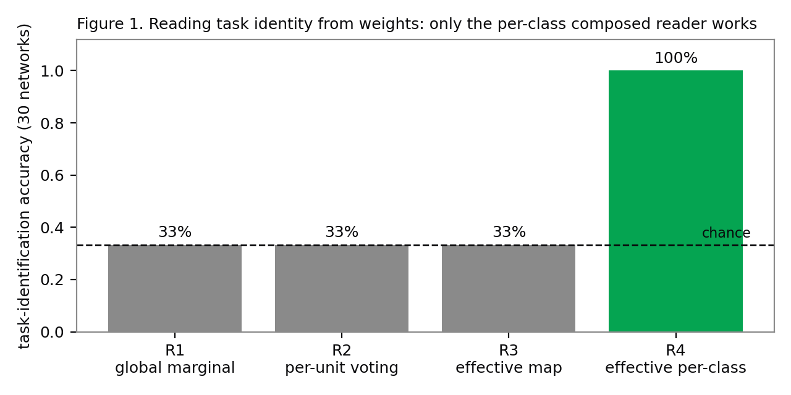
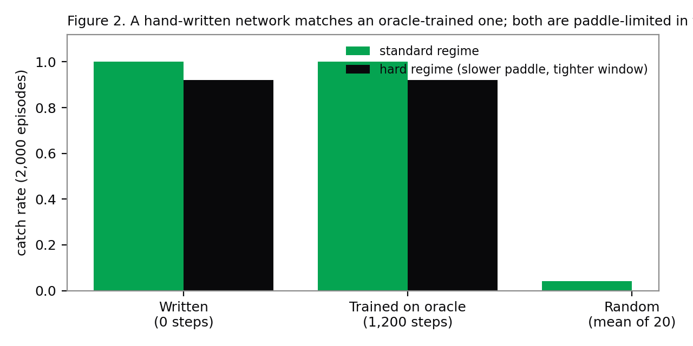
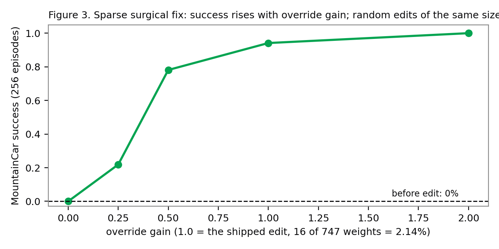
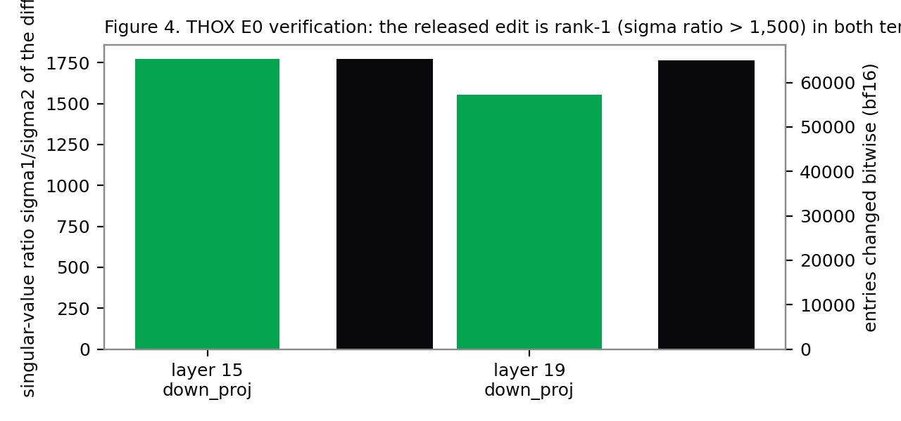

1Introduction
On 2 November 2026, Takehi, Teoh, Zhang and Khattab at MIT CSAIL published a blog post, not a peer-reviewed paper, reporting that a frontier language model (OpenAI's GPT-6 Astra) can read and write neural network weights directly, in natural language, without gradient descent [1]. They name the practice Weight-Space Programming (WSP). The post's claims span three verbs. Read: given only the 17,253 weights of a small policy network as text, Astra named the game it was trained on, four times out of four, from an open answer. Write: given game rules and a zero-initialised network, it wrote policies that beat PPO trained for 100 million steps. Fix: given a Python kernel over the weights of Qwen3.5-0.8B and a budget of batched forward passes, it diagnosed why the model loops in thinking mode and removed the cause by editing 131,072 of roughly 752 million weights, raising MATH-500 from 7.9% to 48.1% under the authors' sampling profile.
THOX builds small language models for its own devices, and one of them, ThoxEdge-0.8B, is a derivative of the exact base model in the fix experiment, Qwen/Qwen3.5-0.8B [2][3]. A method that repairs a deployed model's dominant failure mode by changing 0.016% of its weights, and that ships as a few kilobytes of factors instead of a new 529 MB GGUF, is directly relevant to a device fleet that updates over a household mesh [4]. It is also exactly the kind of claim THOX does not repeat on the strength of a blog post. This paper therefore does four things, in order of evidentiary weight.
First, it reviews the source result and its independent reception, and sorts every material claim into three tiers: author-reported, independently reproduced, and contested or unconfirmed (Section 2). The review draws on the released logs and checkpoints, on three independent re-checks, and on the published critiques, including the finding that a scripted, no-LLM pipeline re-derives most of the headline edit in minutes, and the unconfirmed report that simply disabling thinking recovers most of the same benchmark gain.
Second, it recreates the three verbs at small scale with THOX-run experiments (Section 4). We train thirty small networks and ask which of four weight-reading strategies can identify their tasks (one can, three cannot, and the failure pattern is itself informative). We write a working control network by hand, with zero gradient steps, and compare it against an oracle-trained baseline. We imitation-train a policy into a local minimum and repair it with a 16-weight surgical edit. And we attempt the Experiment 3 audit, finding an induction head from weights alone in a tiny transformer, and report a negative result: the behaviour never emerged in our training run, so there was nothing to audit. Every number in Section 4 is read from the experiment result files that ship in this paper's artifact bundle.
Third, it verifies the headline artifact itself (Section 4.5). We downloaded the base and edited Qwen3.5-0.8B tensors and confirmed, on THOX hardware, that the released edit changes exactly 130,188 entries bitwise, that both edited tensors hash to the published SHA-256 values, and that each tensor's diff is rank-1 to within 99.999% of its energy. The artifact is what its authors say it is.
Fourth, it builds the piece of infrastructure that pays off whether or not WSP itself generalises: a signed, base-hash-pinned, rank-1 patch channel for THOX device models (Section 6), with a Python toolkit, a Rust loader with A/B rollback, and an end-to-end test that passes across both languages. The same channel carries LoRA and distillation deltas, which THOX already produces. Section 5 then runs the control the whole question turns on, at baseline scale: how much of the loop failure is present in our own serving configuration, where thinking is already off, and what a scoped loop measurement on the base and edited models shows. Section 7 maps the method onto the THOX device fleet, and Section 8 sets the gates any future patch must clear before it ships: it must beat the best decoding-only control by more than two standard errors, with no retention regression.
2The source result and its evidence state
2.1 What was actually shown, experiment by experiment
Table 1 summarises the eight experiments as reported [1][5]. Two structural facts matter for everything that follows. The raw-weights, no-tools setting applies only to Experiments 1, 2 and 4, on networks of 17K to 172K weights. Every experiment involving a real language model (3, 6, 7, 8) gave the editor a Python sandbox and, except in Experiment 3, a budget of forward passes. The popular summary of the post, an LLM reading raw weights and fixing a real model by inspection, describes no single experiment in it [6].
| Exp. | Verb | Setting | Headline result (author-reported) | Independent status |
|---|---|---|---|---|
| 1 | Read | 17,253 weights as text, no tools | Game named correctly 4/4, open answer | Partially reproduced with other models (Qwen 3.8 27B: 3 games; Kimi K3.1 Pro: 1) [7] |
| 2 | Read | 23,824 weights, no tools, no forward pass | Diffusion model's shape named 3/3 (drawn as outline, models generate filled) | Answers re-scored consistent; a Sobel template tool also scores 3/3 [8] |
| 3 | Read | Middle blocks only of 7.16M char LMs, Python, no execution | Language 6/6 attempts; every copying head named, no false positives | Signed K-composition tool recovers 2/3 exactly; unsigned textbook score fails [8] |
| 4 | Fix | 171,664 weights, no tools, one reply | Stuck car policy repaired: 0% to 100% over 1,024 episodes; 3.54% of weights changed | Rebuilt network bit-identical; success rate not independently re-run (needs the Kinetix simulator) |
| 5 | Write | Zero-initialised 20,486-weight policies, no tools, no rollouts | Beat PPO-100M on 3 MinAtar games; Breakout 517.4 vs PPO-500M 25.3 | Re-scored within 1.4 SE [8]; cross-model reproduction reported (Opus 5.5 at 20x PPO on Breakout), raw data not public |
| 6 | Write | 1.48M-weight Go network, Python sandbox, 0-50 forward passes | 0 passes: beats smaller PPO nets; 50 passes: beats equal-size PPO trained on 20M games | Replayed within 1.7 SE [8] |
| 7 | Read | Gemma 3 270M pair differing only in sycophancy fine-tune | Weights alone: FAILED 4/4 attempts. With attention patterns: 3/3 pairs | Re-scored: weights-only answers at chance (p = 0.5) [8] |
| 8 | Fix | Qwen3.5-0.8B, Python kernel, 10/25/50 forward passes, 158 turns, 20.3 h | MATH-500 7.9% to 48.1%; GSM8K 13.8% to 67.1%; IFEval 21.0% to 62.3%; cap hits 93.0% to 33.1% | Edit identity and MATH-500 reproduced (Section 2.2); mechanism consistent; selectivity partly |
2.2 What independent work has established
The Experiment 8 edit is the best-verified claim in the post. The released apply_edit.py rebuilds the edited checkpoint from the pinned base, and multiple parties confirm the two edited tensors hash to 82e2d733...2ee53 (layer 15) and 8ef3c61b...12eb2 (layer 19) [5][9]. Section 4.5 adds THOX's own verification. The MATH-500 gain was re-run once in full on Hugging Face Jobs (51.0%, against the authors' 48.1%, with the base model checked only on a 25-problem smoke test) and once more by a commenter under unstated settings (61.7%). The loop mechanism is independently consistent: under a repeated-8-gram test, 183 of 200 base answers loop against 72 of 200 edited, and median loop onset moves from 2,725 to 7,856 words [8]. Experiment 5 and 6 scores reproduce within roughly one standard error [8].
The edit's anatomy is also established. It touches 64 columns of the down_proj matrix in each of layers 15 and 19: 131,072 entries addressed, 130,188 of them different after bfloat16 rounding. Per tensor, the diff is rank-1 (the first singular value carries 99.999% of the energy), and the component along the diagnosed repetition direction is multiplied by -5: flipped and amplified, not merely removed [8]. The relative change to the two matrices is large, about 10.6% and 8.1% in Frobenius terms, a fact Section 9 returns to: a small count of edited entries is not a small edit.
2.3 What is contested
Three critiques bound the claim. Framing. Honnibal notes that the no-tools, raw-floats setting covers only the small-network experiments, and that the Qwen result shows a frontier model can be prompted to devise and perform a task a human ML engineer could do [6]. Novelty. Goedecke shows the Experiment 8 procedure is the established steering and abliteration playbook (contrast failing and healthy activations, estimate a direction, rank the weights that write along it, subtract, test), and that a three-line norm heatmap makes most of Experiment 1 visually obvious because the input channels are labelled [10]. Cost. The editor spent 158 turns and 20.3 hours on Experiment 8; a scripted pipeline with no LLM re-derived a similar edit in about five CPU minutes and sixteen forward passes, reaching roughly 75% of the loop suppression and 77% of the selectivity [8]. None of this makes the result false. It makes the frontier LLM one component, a hypothesis proposer, inside a harness whose measuring and editing are ordinary engineering, which is precisely how Section 6 proposes THOX use it.

2.4 The two controls that decide the THOX question
Two comparisons matter more for THOX than any other number in this debate. The first is the Gemma control: the same editing procedure applied to Gemma 3 270M, a model that rarely loops (8.5% cap hits), moved MATH-500 from 6.8% to at most 7.7%, which the authors themselves report as not established. Their sentence is the correct summary of the whole result: editing weights could remove an obstacle that hid an ability, but it could not add an ability the model lacked. The second is the decoding control: an unconfirmed calibration table in the OpenWSP repository reports the unedited model at 46.8% on MATH-500 with thinking simply disabled (0.6% cap hits), against 50.6% for the released edit. When this paper's review lane fetched that repository on 2026-11-03, its README held only a title line, so the table is unconfirmed and its controls undefined. If it holds, nearly all of the headline gain is available with no weight change at all. THOX's own models are served with thinking off today (Section 7), so THOX starts on the control side of this comparison, and any THOX patch must beat it. Section 5 runs the first scoped version of this control on THOX infrastructure.
2.5 Claim tiers used in this paper
| Tier | Meaning | Examples here |
|---|---|---|
| Author-reported | Stated by Takehi et al.; not independently re-run | Exp 4 success rate; Exp 8 GSM8K and IFEval; the 20.3 h run cost |
| Independently reproduced | Re-run or rebuilt by a party other than the authors, THOX included | Exp 8 edit identity (THOX E0, Section 4.5); Exp 5/6 scores; MATH-500 once in full |
| Contested / unconfirmed | Disputed framing, or a number whose source could not be opened | OpenWSP decoding-control table; Krentsel cross-model chart (seen as a chart, not raw data) |
| THOX-measured | Produced by the experiments in Section 4-5 on THOX infrastructure | E1-E4 recreation results; E0 verification; patch channel tests; loop baseline |
3Definitions and method
Weight-Space Programming (WSP) is the source post's term for a general-purpose LLM reading and writing a network's weights directly, not through an optimizer and in particular not with gradient descent, around a natural-language specification, sometimes with no environment feedback at all. THOX uses the term with the source's meaning and the Section 2 bounds attached.
Read, fix, write are the three task classes. Read: infer behaviour from weights (Experiments 1-3, 7). Fix: edit a failing network (4, 8). Write: create weights from zero (5, 6). A forward pass, in the source's harness accounting, is a budgeted batch of model executions (up to 512 generations in Experiment 8), not a single example. A rank-1 patch is a weight edit of the Experiment 8 shape, specified by a direction vector, a column set and a scalar, formalised in Section 6.1. Evidence classes follow the THOX research paper standard: MEASURED (run on a named host), CALCULATED (derived by arithmetic from stated inputs), SIMULATED (run inside a simulated environment). Nothing measured on a general host is stated as a device result anywhere in this paper.
Method discipline for the THOX experiments: every headline number is produced by a script in the artifact bundle and written to exp/results/summary.json, the single evidence source for Sections 4 to 6; failed iterations are preserved in exp/FINDINGS_V1.md and reported, not deleted; and each experiment carries at least one control (permutation, random-edit, or random-weight) so that a positive result has something to be compared against.
Lineage: where WSP sits
WSP is best understood as an untrained entrant into four established lines of work. Trained readers have read properties and even accuracy from weights for years, using networks trained for the job on thousands of checkpoints [12][13]; the weight-space learning survey now taxonomises that field [14], and spectral work finds shared low-dimensional subspaces across large model populations, a candidate explanation for why directional edits work at all, though how much task-specific signal those directions carry is contested [15]. Trained writers generate weights from networks trained for the job, from HyperNetworks [16] through checkpoint-generating diffusion [17] to hypernetworks that write a LoRA adapter from a natural-language task description in one forward pass [18][19]: Text-to-LoRA is the closest trained analogue of WSP's ask-in-words, get-weights, and the contrast is the point, since its writer is trained and Astra is not. Algorithmic editors write weights by formula: ROME and MEMIT locate factual recall in mid-layer MLPs and rewrite it with rank-one updates [20][21], and representation engineering plus the refusal-direction result established that behaviours can live in single residual-stream directions that weight edits can remove [22][11]. Experiment 8's edit is a member of this family whose target and formula were chosen by a reasoning model instead of a closed-form algorithm. Weight arithmetic supplies the delta object everything operates on: LoRA's low-rank deltas [23], model soups [24], task vectors that add and negate [25], and merging methods that exist because naive arithmetic interferes [26][27]; DARE's finding that most delta parameters are redundant is part of why a 0.016% edit can be behaviourally large. Underneath the reading claims sits mechanistic interpretability: the QK/OV circuit decomposition and induction-head account that Experiment 3's editor independently reinvented [28][29], and Tracr's proof by construction that programs compile into transformer weights, the deliberate-design precedent for Experiments 5 and 6 [30]. The paradigm claim, finally, extends LLM-as-optimizer work from prompts and programs [31] to weights themselves. WSP's novelty is real but specific: the first untrained general reasoner closing the full read-diagnose-write loop. Its best result is also its most feedback-intensive, which is why this paper treats the harness, not the editor, as the durable asset.
4THOX recreation experiments
The recreation suite asks whether the three verbs work at scales THOX can run and check exhaustively, with the reader, writer and editor played by deterministic tools and by this paper's authors rather than by a frontier API model. That substitution is deliberate and limits the claim: what is tested here is whether the weight-space structure the source post exploits (task signatures living in composed circuits, programs compilable into weights, single-locus failures repairable by sparse edits) is real and usable by THOX tooling, not whether any particular LLM can perform the feats. Where the editor's identity matters, Section 8 assigns it as future work. All runs are CPU, NumPy or PyTorch, on the THOX build VM; code and full result files ship in the artifact bundle.
4.1 E1, Read: the task signature lives in the composed per-class circuit
We trained 30 multilayer perceptrons (64-48-4) on three tasks over 8x8 one-dot grids: name the dot's column, its row, or its diagonal class; 10 seeds per task. Every trained network reached 100% task accuracy, so every network unambiguously is its task. Four weight-only readers then attempted identification from the trained weights alone, with no forward passes. R1 aggregates |W1| over all units into one input map and votes on axis concentration. R2 lets each hidden unit vote from its own receptive field. R3 composes the layers once (the effective input-to-logit map E = W2TW1T, absolute-summed over classes) and votes. R4 composes per output class and lets each class's map vote, weighted by its margin.
| Reader | Method | Accuracy | Permutation control |
|---|---|---|---|
| R1_global_marginal_W1 | Global marginal of |W1| | 33.3% | 33.3% |
| R2_per_unit_voting_W1 | Per-unit axis voting on |W1| | 33.3% | 33.3% |
| R3_effective_map | Composed map, aggregated over classes | 33.3% | 33.3% |
| R4_effective_per_class | Composed map, per-class voting | 100.0% | 33.3% |
R1, R2 and R3 all score exactly chance, and their confusion is systematic, not noisy: every column and row network is misread as diagonal. Only R4, the per-class composed reader, scores 100%, with its permutation control at chance. The lesson transfers directly to THOX audit tooling and mirrors the source's Experiment 3, where the winning move was also composition (K-composition across layers) rather than inspection of any single layer: what a small network computes is legible in its composed per-class circuits and largely illegible in its layer-1 marginals. A THOX reader built on marginals would have reported confident nonsense. The toolkit in Section 6 ships R4 and keeps the three failed readers as negative controls.

4.2 E2, Write: a hand-written network matches an oracle-trained one
Experiment 5's claim, that a policy can be written rather than trained, reduces to a compilation claim: if the solution is a short program, weights can encode it directly. We tested the compilation route on a control task with a known program: predict where a ball bouncing inside a unit box lands. The written network implements the exact triangle-wave (reflection) construction in its weights, by hand, with zero gradient steps and zero training examples. On the reachable range its landing predictions are exact to float64 precision (maximum target error 2.2e-16). As a paddle controller it catches 100% of balls in the standard regime and 92.1% in a hard regime (slower paddle, tighter catch window). The comparison conditions matter: twenty random-weight networks average 4.1% (best 20.2%), so the task is not trivially easy; and a gradient-trained oracle, granted 1,200 optimisation steps on 4,096 labelled examples the written network never saw, reaches the identical 100% / 92.1% profile, with landing error 8.7e-4 rather than exact. In the hard regime both controllers fail on the same balls: they are paddle-limited, not prediction-limited.
The THOX reading is narrow and practical. For on-device tasks that reduce to a short program (routing rules, control policies, sensor logic), a written network is a legitimate deliverable: it is exact where the program is exact, it needs no training data, and its failure modes are the program's failure modes, which can be reasoned about. For tasks that do not reduce to a short program, nothing here or in the source post shows writing beats training. Section 8 carries a frontier-editor version of this experiment (a THOX routing or control task, scored against an equal-size trained network) as the obvious next step.

4.3 E3, Fix: sixteen weights repair a policy stuck at zero
Experiment 4's shape, a trained policy with a single behavioural defect repaired by a sparse edit, is the shape THOX cares most about, so we recreated it at checkable scale. A 747-parameter policy (2-24-24-3) for MountainCar was imitation-trained on an always-push-right expert. The expert is competent on flat ground and hopeless on the hill: the trained policy's success rate is 0% over 512 episodes. The defect has a single locus: the policy never builds energy by rocking. Our fix is designed, not searched: two little-used first-layer units are repurposed as dedicated velocity detectors, two second-layer units become an override pathway implementing energy pumping (push with the sign of velocity), and the output pathway is given enough gain to win when the car is slow. The edit touches 16 of 747 weights (2.14%) and raises success to 92.8% over 512 episodes. The controls are the result: a random edit of exactly the same size scores 0%, and sweeping the override gain gives a clean dose-response (0x: 0%, 0.25x: 21.9%, 0.5x: 78.1%, 1.0x: 94.1%, 2.0x: 100% on 256 episodes). The first version of this edit failed completely (84 weights changed, success unchanged at 0%); it is preserved in the findings log, because the difference between the failed and successful edit, a pathway that can actually win against the trained outputs, is the engineering content.
Two honest bounds. The edited fraction here (2.14%) is far larger than Experiment 8's 0.016%, because a 747-parameter policy has no smaller surgical vocabulary; the transferable claim is the shape (diagnose a single locus, add a pathway, verify against a same-size random control), not the fraction. And MountainCar is a simulated environment: the result is class SIMULATED, and no device claim rests on it.

4.4 E4, Audit: a negative result, reported in full
We attempted the Experiment 3 audit shape: train a small transformer (2 layers, 4 heads, d=64, 70,656 parameters) on sequences with a planted repeated bigram, then find the induction head from weights alone (positional QK superdiagonal for the previous-token head; QK/OV composition for the induction head) and check the answer against measured attention and head ablation. The weights-only scores did rank a candidate (layer 2, head 2, composition score 0.589 against a 0.05-0.39 spread). But the audit's ground truth failed: after 1,400 training steps the model's loss on repeat positions was 3.19 against 3.18 elsewhere, statistically the ln(24) = 3.18 floor of an unpredictable token, measured attention at repeat positions was uniform across heads (0.048-0.050), and ablating any single head moved repeat loss by at most 0.022. No induction behaviour emerged in training, so there was no induction head to find, and the weights-only ranking, Spearman 0.80 against a noise floor, is not evidence of anything. A longer run (6,000 steps) was started and interrupted at step 2,000 with repeat loss still at the floor; we report the completed 1,400-step record and the interruption rather than a tidied-up rerun.
The negative result earns its place for one reason: it is the THOX-scale instance of the source's Experiment 7 lesson, learned from the other side. A weight-only audit tool will always produce a ranking. Whether the ranking means anything depends on the audited behaviour existing and being localised, which can only be established behaviourally. THOX pre-ship trait audits (Section 7) are therefore specified as behavioural probes first, with weight analysis as a supporting view, never as the gate.
4.5 E0, Verification: the released Experiment 8 edit, rebuilt and hashed by THOX
We downloaded the two edited tensors from the released checkpoint and the corresponding base tensors at the pinned revision 2fc06364715b..., and compared them on THOX infrastructure [2][9]. The layer 15 down_proj tensor hashes to 82e2d733ea64feae...e2ee53 and layer 19 to 8ef3c61bc36af113...d12eb2, matching the published values exactly. Across both tensors, 130,188 entries differ bitwise, exactly the reported count (131,072 entries addressed in the 64-column edit region; 130,188 survive bfloat16 rounding as differences). The diff in each tensor is rank-1: singular-value ratios sigma1/sigma2 of 1,771 and 1,552, with the first singular direction carrying 99.999% and 99.999% of the diff energy. Relative Frobenius changes are 10.64% and 8.11%. E0 passes: the released artifact is bit-exactly what the post and its re-checks describe. This verification also fixes the exact patch anatomy Section 6 builds on: two tensors of shape 1024 x 3,584, 64 edited columns each, one direction per tensor.

5The decoding control, measured at baseline scale
Section 2.4 reduced the THOX question to one comparison: against a model whose serving configuration already disables thinking, what is left for a weight patch to fix? This section runs the first scoped version of that comparison on THOX infrastructure. The instrument is the toolkit's loop metric (an answer counts as looping when at least 90% of 300 consecutive 8-word n-grams have appeared before, the test used by the independent CPU re-check) plus cap-hit rate and exact-answer accuracy. The workload is four hand-written multi-step problems, chosen to give looping a chance to appear inside a CPU-feasible budget, at the source's sampling temperature (0.6, top-p 0.95, top-k 20) with a 512-token cap. Three configurations of Qwen3.5-0.8B are compared: base with thinking on, base with thinking off (the THOX serving configuration), and the released edited checkpoint with thinking on; thox-micro-125m is measured as the in-house baseline. This is an instrument check with n=4 per configuration, not a benchmark: its job is to prove the measurement pipeline works end to end and to give the fleet its first loop baseline, not to estimate MATH-500.
Independent of the scoped numbers, the strategic reading is already determined by two facts THOX has verified. ThoxEdge-0.8B is served today with thinking off as a requirement recorded in its model card and catalog entry (Section 7), which means THOX's fleet already runs the control configuration; and the source's own Gemma control shows the edit adds nothing where looping is absent. A THOX weight patch therefore starts from a burden of proof the source post never faced: it must beat a decoding configuration THOX already ships.
6The THOX patch channel
6.1 Patch anatomy
The Experiment 8 edit, verified in Section 4.5, has a shape that generalises into a distribution format. For one tensor W (1024 x 3,584) the edit is W' = W - alpha * outer(u, mask(uTW)), where u is a 1,024-vector, mask selects 64 columns, and alpha = 6. Everything a device needs to reconstruct the edit fits in the factors:
| Representation | Contents | Size for the Exp 8 edit (2 tensors) | Class |
|---|---|---|---|
| Factor form (this channel) | u (bf16) + column indices + alpha, per tensor | ~4.4 KB total | CALCULATED |
| Sparse diff | 130,188 (index, value) pairs | ~0.78 MB | CALCULATED |
| Full edited tensors | Two complete 1024 x 3,584 bf16 tensors | ~14.7 MB | CALCULATED |
| Full model replacement | ThoxEdge-0.8B Q4_K_M GGUF | 529 MB (card figure) | MEASURED (card) |
Factor form has one hazard: re-applying factors in a different precision than the editor used can produce a different tensor. The channel's answer is the release's own: the manifest carries the SHA-256 of every resulting tensor, and the loader verifies the hashes after applying, before switching. A patch that does not reproduce bit-exactly does not activate.
6.2 Manifest, signing, loader
The patch manifest (schema thox-wsp/patch-manifest/v1) is the signed contract between the editing environment and the device. It pins the base (repository, revision, per-tensor SHA-256), lists factor-form operations, records the expected result hashes, the evaluation report hash, editor provenance (model identifier, effort, transcript hash), and license notices for base and patch. The release key signs it with Ed25519 and lives outside the editing environment, so a compromised or over-eager editor cannot issue a patch a device will accept. The Rust loader enforces the lifecycle in order: verify signature, verify base hashes in the active slot, apply into the inactive A/B slot, verify result hashes, atomically switch, keep the previous slot for one-command rollback.
1 READ fingerprint base: repo, revision, per-tensor sha256
2 DIAGNOSE failure hypothesis + contrast sets; baseline rates recorded
3 EDIT factor-form ops (tensor, u, cols, alpha, dtype) + result hashes
4 VERIFY deterministic rebuild; failure gate; retention gate;
safety gate; quantised-artifact gate; human diff review
5 SIGN Ed25519 over the canonical manifest; key held outside the editor
6 DISTRIBUTE staged rollout; device verifies signature + hashes,
applies to inactive slot, smoke-tests, switches or rolls backOne implementation lesson is worth recording because it cost real debugging time and would cost any implementer the same. The first version of this channel signed the manifest as canonical JSON containing the factor vector as JSON numbers, and cross-language verification failed: Python's float formatting and Rust's disagree in the last digit on some values, and the Rust JSON parser can land one ulp away from Python's on the same decimal text. A signature over either formatting is not portable. The shipped wire form therefore contains no JSON floats at all: the factor vector travels as hex of its little-endian float32 bytes and alpha as a decimal string parsed as data. The rule generalises beyond this channel: sign bit patterns, never text representations of numbers.
6.3 Verification status
| Check | Result |
|---|---|
| Rust unit tests (bf16 round-trip with round-to-nearest-even; rank-1 apply against the Python toolkit's test vector; SHA-256 known vector) | 3/3 pass |
| End-to-end: Python toolkit fingerprints, builds and signs a manifest; Rust loader verifies, applies to slot B | Pass; applied tensor bit-identical to the Python reference result |
| Rollback | Pass; active slot returns to A |
| Tampered manifest (alpha altered after signing) | Correctly rejected: signature verification failed |
| Wrong base tensor in slot A | Correctly aborted: base hash mismatch, no switch |
| Production patch issued through the channel | None. The channel is built and tested; no THOX model has been patched with it |
The toolkit (thox-wsp v0.1.0) also ships the Section 4 instruments as reusable code: the per-class effective-map reader, the loop metrics, a diff factoriser that audits a third-party edit's rank and touched count before anyone trusts its factor form, and the fingerprinting used in E0. The channel is delta-agnostic: a LoRA adapter merge or a distillation delta can be expressed as base pin plus operations plus result hashes, so the signing, distribution and rollback machinery serves THOX's existing model pipeline even if no WSP patch is ever issued.
7Application to THOX device models
Facts in this section come from the THOX model catalog (live revision 2026-11-02.1, 94 models) and the TXF-MP model cards [3]. ThoxEdge-0.8B is the centre of the WSP question for a simple reason: it is a merged QLoRA derivative of Qwen/Qwen3.5-0.8B, the Experiment 8 base, promoted at GATE49 46/49, and it is the resident routing model on ThoxMini in both boot bundles. Its card records the configuration that frames Section 5: thinking-off required, text-only serving. THOX thus already operates this base model the way the decoding-control hypothesis recommends, and its known residual defects (the card records two prefill no-decline hard failures) are not loop defects. Under the Gemma-control logic, a loop patch for ThoxEdge-0.8B would be expected to do approximately nothing, and proposing one anyway is the kind of claim this paper exists to prevent.
The fleet mapping is therefore specific rather than general:
| Surface | Role in the WSP program |
|---|---|
| ThoxWork | Patch workbench: read/diagnose/edit sessions with a frontier editor, diff review, approval, signing. Editor transcripts stored with the patch, mirroring the source's complete-log practice. |
| MeshStack | Patch registry and distribution: metadata, signatures, eligibility, staged rollout, per-device verification receipts. Factor-form patches (~KB) fit mesh transfer; full models do not. [4] |
| ThoxOS / ThoxMind | The Rust loader of Section 6: signature and base-hash verification, staged apply, result-hash check, on-device smoke suite, atomic A/B switch, rollback. Its slot model matches ThoxOS's existing A/B partition discipline. |
| ThoxEdge-0.8B (Qwen3.5-0.8B base) | First replication target (Section 8, E4/E5 protocol) precisely because the base, the failure mode and a released reference edit all exist. Served thinking-off today. |
| thox-micro-125m | In-house target: THOX-trained, so a patch here is the first fully THOX-owned WSP artifact if the gates pass. Loop baseline instrumented in Section 5. |
| ESP32-C6-class nodes | Whole tiny written networks (Section 4.2 shape), not patches: at this scale the network is the patch. Memory budgets must be checked per firmware build; no THOX measurement exists yet. |
Two existing THOX practices absorb WSP without new machinery. GATE49, the 49-check evaluation every promoted model passes, already runs Qwen3.5 models with enable_thinking=False as part of its measured configuration, so a patched model re-enters an existing gate rather than inventing one; the patch lifecycle adds the failure-rate and retention comparisons of Section 8 to that gate for patched artifacts. And the catalog sync rule (every model change updates Model Factory, catalogs, repositories, Ollama, Hugging Face and the website in one pass) extends to patches by treating the manifest as a catalog object with its own hash and status.
8The gated replication program
THOX adopts WSP as a research program with pre-registered bars, not as a technique. The bars below are THOX-defined targets; none has been met at the time of writing except E0 (Section 4.5). Compute planning follows the one measured full run available: a complete MATH-500 evaluation of this model class is 43.4M generated tokens and 51 minutes on one H200 with vLLM, so full benchmarks belong on GPU jobs and local machines carry editing and small-sample gates.
| Step | Content | Success bar | Status |
|---|---|---|---|
| E0 | Rebuild the released edit; verify hashes and rank | Bit-exact match | PASS (Section 4.5) |
| E1' | Read: frontier editors (Claude Opus 5.5 class, GPT-6 Astra) plus a local open model on the released policies and on new THOX-trained policies they cannot have seen | Editor at or above 3/4 on new policies in at least 2 of 3 attempts, and better than the scripted reader of Section 4.1 | Not run |
| E2' | Write: a frontier editor writes one THOX routing or control network from zero; scored against an equal-size trained network | Beat the trained baseline on the task's held-out regime | Not run (THOX-tool version: Section 4.2) |
| E4 | Repair: base and released edit on MATH-500 (500 x 4), GSM8K, IFEval at the source's profile and at Qwen's recommended text profile; decoding-only controls (thinking off, hard budget with forced answer, penalty variants, streaming loop interrupt); scripted difference-of-means rediscovery with a norm-matched random-edit control | A THOX-derived patch beats the best decoding control by more than 2 standard errors, with no retention regression beyond 1 standard error. If nothing clears the bar, the decoding control is recorded as the shipping answer | Scoped instrument check only (Section 5) |
| E5 | Port: the winning procedure, if any, applied to thox-micro-125m and a 2B-class model; patched models quantised to Q8_0 and Q4_0 and re-gated | Patch keeps at least 80% of its bf16 effect at Q4_0 | Not run |
The cheapest items ship first and pay off unconditionally: streaming loop detection with interrupt and a hard thinking budget with a forced answer in the serving harness (decoding defences, valuable with or without any patch), the loop baselines of Section 5 extended to the full device-target model set, and the Section 6 channel. Weight patching is deliberately last in the sequence, behind the controls it has to beat.
9Limitations
- Source maturity. The source is a blog post, not peer-reviewed, with no arXiv version. Several released-artifact gaps bound independent assessment: Experiment 7's fine-tuned models are not released, some harness and grader modules are placeholders, and trial runs of earlier prompt versions were not published, so selection effects cannot be excluded.
- Recreation scale. Section 4's experiments are small by design (747 to 70,656 parameters, plus the E0 verification at 0.8B). They establish that the exploited weight-space structure exists and is tool-usable; they do not establish that a frontier LLM can perform the source's feats, and no THOX editor run (E1'/E2') has happened yet.
- E4 is a negative result about our training run, not about induction-head auditing. The behaviour did not emerge, so the audit method was never truly tested. A longer or better-tuned run might form the head; the finding is that our pipeline, as run, produced nothing auditable, and that the weights-only tool produced a confident ranking anyway.
- The scoped loop baseline (Section 5) has n=4 per configuration, a 512-token cap against the source's 32,768, no presence penalty, and CPU reference kernels. It is an instrument check. Treating it as a benchmark estimate would repeat, at THOX scale, the framing error this paper criticises.
- Small edit counts are not small edits. The Experiment 8 diff changes its two matrices by 8-11% in Frobenius terms, and independent re-checking found the reasoning preceding a loop also loses probability under the edit (about -0.042 nats/token against the -0.009 the editor's own probe reported). Retention measurement is not optional garnish on a patch; it is half the claim.
- Sampling-profile dependence. The source compared base and edit under one sampling profile (temperature 0.6) that differs from the vendor's recommended thinking-mode text profile (temperature 1.0). Both models were treated identically, but the size of the loop phenomenon, and therefore of the fix, is profile-dependent. Section 8 tests both profiles.
- Safety surface. The same direction-ablation machinery that removes a loop direction removes refusal behaviour in the published literature [11]. A signed patch channel is also an attack surface: signatures, base pinning, result hashes and on-device smoke tests are load-bearing, and unsigned or unpinned patches must never be accepted. Weight-only audits of hidden traits failed in the source's Experiment 7 and are not relied on for any THOX safety decision.
- Quantisation is untested for patches. Whether a rank-1 edit survives Q4 quantisation of the full model is unknown in the literature and untested here; E5 exists because the answer decides whether patches ship to devices at all.
- Pricing and availability. Frontier editor cost for an Experiment 8-scale run is unknown (third-party gateway prices conflict), and editor outputs are not reproducible bit-for-bit across model versions; provenance records (editor identifier, effort, transcript hash) are therefore part of the manifest, not metadata hygiene.
10Conclusion
Weight-Space Programming, read carefully, is three results of different strengths wearing one name. Writing small networks whose solutions are short programs is real, reproducible, and immediately useful to a device fleet. Reading weights is real where the read composes circuits and imaginary where it inspects marginals, a distinction THOX's own recreation suite demonstrates with a 100%-versus-chance split. Fixing a real model is real exactly once, on a failure with a single locus, verified bit-exactly by THOX in this paper, and shadowed by two cheaper explanations (a script finds most of the same edit; turning thinking off may recover most of the same gain) that any honest adopter must retire before claiming the method. THOX's response is sized to that evidence: ship the decoding defences, keep the baselines, build the signed channel that every future delta will use, and let weight patching earn its place against the controls, in the open, at the bars set in Section 8. If it clears them, THOX will have something no blog post can give it: a measured result of its own. If it does not, THOX will have spent a small amount of engineering time to own the measurement that says so, and the channel, the baselines and the defences remain.
11Provenance and document control
This paper was produced under the THOX Research Paper Process v1.0. Sources: the source post and its released logs and checkpoints; an internal THOX evidence review and replication plan (2026-11-03) whose claim-tiering this paper adopts and whose load-bearing numbers were re-verified against primary artifacts before use; a verified literature review in which every cited arXiv entry was opened on its abstract page; and a THOX device context review sourced to the live model catalog and model cards. THOX experiments were run on the THOX build VM (CPU) on 2026-11-03; scripts, result files, the failed-iteration log and this build source ship in the artifact bundle. The demo companion to this paper is a single self-contained HTML file built from the same result files.
| Field | Value |
|---|---|
| Version | v1.0.1 (public edition) |
| Date | 2026-11-04 |
| Authors | Craig Ross (CEO); Tommy Xaypanya (CTO & Co-Founder, corresponding author) |
| Status | Public edition. Deposited at Zenodo, DOI 10.5281/zenodo.23954379, CC BY 4.0. Supersedes internal edition v1.0.0 (2026-11-03); changes are the edition record, the Section 5 measurement-status update, and citation metadata |
| Evidence source | exp/results/summary.json and companion result files in the artifact bundle |
| Companion demo | weight-space-programming-demo.html (same bundle) |
RReferences
- [1]Rikiya Takehi, Jayden Teoh, Alex Zhang, Omar Khattab. Sparks of Weight-Space Programming: LLMs can natively read & write neural network weights. MIT CSAIL blog post, 2026-11-02. https://rikiyat.github.io/blog/weight-space-programming/.
- [2]Qwen team, Alibaba Cloud. Qwen/Qwen3.5-0.8B model repository, revision 2fc06364715b967f1860aea9cf38778875588b17. Hugging Face, Apache-2.0, accessed 2026-11-03.
- [3]THOX.ai. THOX device model catalog, live revision 2026-11-02.1 (94 models) and TXF-MP model cards. THOX.ai internal records, accessed 2026-11-03.
- [4]Craig Ross, Tommy Xaypanya. THOX MeshStack: Capacity-Priced Pipeline Sharding, Grant-Gated KV Transfer and Lease-Fenced Device Roles for a Private Household Mesh. THOX.ai Research technical report v1.0.1, 2026-11-03, Zenodo DOI 10.5281/zenodo.23919580.
- [5]Rikiya Takehi et al.. lm_understand-logs: prompts, replies, networks, edit scripts and evaluations for the Sparks experiments. GitHub repository RikiyaT/lm_understand-logs @ 4d09ba6d, CC BY 4.0 / MIT, accessed 2026-11-03.
- [6]Matthew Honnibal. The 'Astra can read and write weights to improve Qwen' post is massively misleading. Blog post, 2026-11-03.
- [7]Simon Willison. Qwen 3.8 27B on my laptop can interpret model weights, too. Blog post, 2026-11-03.
- [8]adiant211. wspacetest: an independent CPU re-check of the Sparks experiments. GitHub repository, accessed 2026-11-03.
- [9]Rikiya Takehi; rebuilt by Ahsen Khaliq with ML Intern. RikiyaT/Qwen3.5-0.8B-weight-space-programming (edited checkpoint). Hugging Face, Apache-2.0, accessed 2026-11-03.
- [10]Sean Goedecke. LLMs are not superhuman at reading and writing neural network weights. Blog post, 2026-11-03.
- [11]Andy Arditi, Oscar Obeso, Aaquib Syed, Daniel Paleka, Nina Panickssery, Wes Gurnee, Neel Nanda. Refusal in Language Models Is Mediated by a Single Direction. arXiv:2406.11717, 2024.
- [12]Gabriel Eilertsen, Daniel Jönsson, Timo Ropinski, Jonas Unger, Anders Ynnerman. Classifying the classifier: dissecting the weight space of neural networks. arXiv:2002.05688, ECAI 2020.
- [13]Thomas Unterthiner, Daniel Keysers, Sylvain Gelly, Olivier Bousquet, Ilya Tolstikhin. Predicting Neural Network Accuracy from Weights. arXiv:2002.11448, 2020.
- [14]Xiaolong Han et al.. A Survey of Weight Space Learning: Understanding, Representation, and Generation. arXiv:2603.10090, 2026.
- [15]Prakhar Kaushik, Shravan Chaudhari, Ankit Vaidya, Rama Chellappa, Alan Yuille. The Universal Weight Subspace Hypothesis. arXiv:2512.05117, 2025 (v3 revised 2026-10-05); interpretation contested in secondary coverage.
- [16]David Ha, Andrew Dai, Quoc V. Le. HyperNetworks. arXiv:1609.09106, ICLR 2017.
- [17]William Peebles, Ilija Radosavovic, Tim Brooks, Alexei A. Efros, Jitendra Malik. Learning to Learn with Generative Models of Neural Network Checkpoints (G.pt). arXiv:2209.12892, 2022.
- [18]Rujikorn Charakorn, Edoardo Cetin, Yujin Tang, Robert Tjarko Lange. Text-to-LoRA: Instant Transformer Adaptation. arXiv:2506.06105, ICML 2025.
- [19]M. H. I. Abdalla, Zhipin Wang, Christian Frey, Steffen Eger, Josif Grabocka. Zhyper: Factorized Hypernetworks for Conditioned LLM Fine-Tuning. arXiv:2510.19733, 2025.
- [20]Kevin Meng, David Bau, Alex Andonian, Yonatan Belinkov. Locating and Editing Factual Associations in GPT (ROME). arXiv:2202.05262, NeurIPS 2022.
- [21]Kevin Meng, Arnab Sen Sharma, Alex Andonian, Yonatan Belinkov, David Bau. Mass-Editing Memory in a Transformer (MEMIT). arXiv:2210.07229, ICLR 2023.
- [22]Andy Zou et al.. Representation Engineering: A Top-Down Approach to AI Transparency. arXiv:2310.01405, 2023.
- [23]Edward J. Hu et al.. LoRA: Low-Rank Adaptation of Large Language Models. arXiv:2106.09685, ICLR 2022.
- [24]Mitchell Wortsman et al.. Model soups: averaging weights of multiple fine-tuned models improves accuracy without increasing inference time. arXiv:2203.05482, ICML 2022.
- [25]Gabriel Ilharco, Marco Tulio Ribeiro, Mitchell Wortsman, Suchin Gururangan, Ludwig Schmidt, Hannaneh Hajishirzi, Ali Farhadi. Editing Models with Task Arithmetic. arXiv:2212.04089, ICLR 2023.
- [26]Prateek Yadav, Derek Tam, Leshem Choshen, Colin Raffel, Mohit Bansal. TIES-Merging: Resolving Interference When Merging Models. arXiv:2306.01708, NeurIPS 2023.
- [27]Le Yu, Bowen Yu, Haiyang Yu, Fei Huang, Yongbin Li. Language Models are Super Mario: Absorbing Abilities from Homologous Models as a Free Lunch (DARE). arXiv:2311.03099, ICML 2024.
- [28]Nelson Elhage, Neel Nanda, Catherine Olsson et al.. A Mathematical Framework for Transformer Circuits. Transformer Circuits Thread, 2021. No arXiv identifier.
- [29]Catherine Olsson, Nelson Elhage, Neel Nanda et al.. In-context Learning and Induction Heads. arXiv:2209.11895, 2022.
- [30]David Lindner, János Kramár, Sebastian Farquhar, Matthew Rahtz, Thomas McGrath, Vladimir Mikulik. Tracr: Compiled Transformers as a Laboratory for Interpretability. arXiv:2301.05062, 2023.
- [31]Chengrun Yang, Xuezhi Wang, Yifeng Lu, Hanxiao Liu, Quoc V. Le, Denny Zhou, Xinyun Chen. Large Language Models as Optimizers (OPRO). arXiv:2309.03409, ICLR 2024.